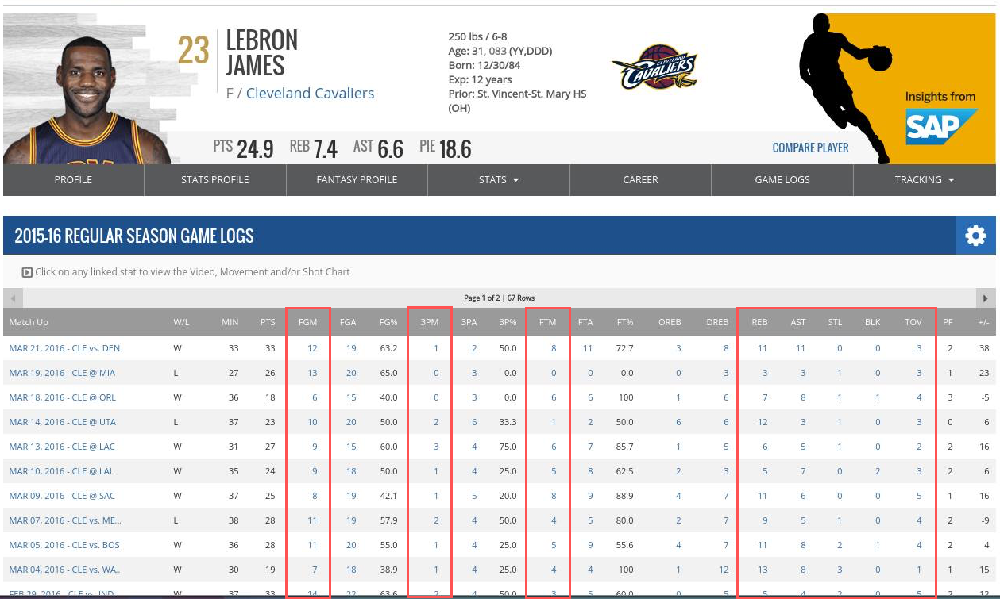

Lineup Recommender «Writeup»
Midterm Report
Part 1: Introduction
For our project, we decided to analyze NBA player scores by game in order to find optimal fantasy basketball lineups for website like FanDuel and DraftKings. We want to look at a player's historical game performance and then predict that player's performance in a future game. We can then take these projected scores to recommend the optimal lineup of players for users of the websites mentioned above. Below are some specific questions we're hoping to tackle in the process.
- Can we consistently predict the performance of low variance players? If so, should we tend to lean towards selecting low variance players to become more risk averse in the long run.
- Can we predict success of low salaried players who have a high variance in their performances? This would help us replace the least useful high salaried players and consequently give us better odds of winning contests because most users tend to choose high salary players.
- Can we incorporate metrics opposing team, home or away, etc. into our prediction model? If so, can we determine what subset of these metrics provides best results and why?
The NBA player data is obtained from stats.nba.com. It contains the player scores, with each entry representing a particular player's score for a particular game. Each player's score is broken down into their 3-point and 2-point field goals made, freethrows, steals, blocks, rebounds, assists, and turnovers.
We also obtain data from Swish Analytics, which provides player score projections based on their own models. We use this data as an example to compare with the projections we make.
Part 2: Visualization


This visualization shows a basketball chart, where each circle represents a player on their strong positions. It gives recommendation on which player to choose for a specific position. When hovering over each circle, i.e. each player, there's a tooltip that tells information about the player, such as their salary, position, projected points, and team name. The color scale also gives information as to which player is projected to earn the most points - darkest representing highest points.
How we get an optimal lineup
For this visualization, the data used is from Swish Analytics. Since Swish Analytics updates their projections everyday, our database also updates the prejected scores and our goal is to also update our lineup visualization.
To make a simple optimal lineup, first, the players are sorted by their projected points from highest to lowest. With the sorted list, the players are filtered by their salary and injury status. In order for them to be in the lineup, they have to have salary less than or equal to 60,000/9 and have no injury. We want to recommend players whose salary is affordable and performs well.
There are 9 players in a lineup - one in the Center position, and 2 players in other positions each.
Then, for this visualization, we pick the player with the highest point from each position. Thus, the visualization recommends 5 players for 5 positions.
Part 3: Machine Learning
Once we have our NBA player data, we can apply machine learning to predict projected player scores. We decided to use logistic regression as our learning algorithm.
We transform our player data from their goals, freethrows, assists, etc. into a single FanDuel score. Then, we associate each player's FanDuel score for a game with the average FanDuel score of their prior games